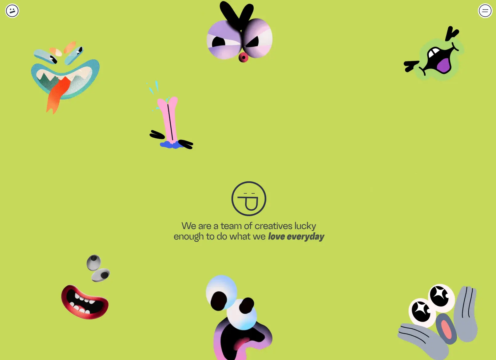

Prand
- Агентства и студии
- Продакн и моушн
- Игривый
- Коллаж и иллюстрация
- Сайт жив

Что это
Сайт анимационной студии Prand из Тбилиси: главная с каталогом работ, страница о студии с командой и отдельные страницы проектов. Собран как headless-связка — фронтенд на Nuxt 3 с пререндером, Pinia и Apollo, а контент приходит из WordPress по GraphQL с отдельного домена. Вся подача построена на GSAP ScrollTrigger и Lottie: прелоадер из покадрово прокручиваемого логотипа, закреплённый на четыре тысячи пикселей первый экран, где скролл управляет и векторной анимацией, и временем видео, и сцена на three.js на странице о студии. Живой насыщенный сайт анимационной студии из Тбилиси. Главная фишка — анимированный мультяшный лоадер при скролле.
Чем интересен
- Прелоадер — не крутилка на CSS, а векторная анимация логотипа, которую прокручивают покадрово твином на пять секунд поверх панели из четырёх цветных слоёв; затем слои уезжают по очереди, а панель закрывается переходом маски.
- Первый экран закреплён на четыре тысячи пикселей скролла: за это время успевают прокрутиться векторная анимация, смениться фон, проявиться восемь нарисованных персонажей и перемотаться время видеофайла — то есть колесо мыши управляет и вектором, и видео.
- Контент живёт в headless WordPress на отдельном поддомене: в данных страницы видна схема GraphQL с категориями и проектами, а фронтенд дополнительно дёргает REST-адрес страницы.
- Страница о студии — настоящая сцена на three.js: HDRI-окружение, выдавленные из SVG контуры, загруженная OBJ-модель и рейкастер, а не видеофон.
- Микроинтеракции собраны на одном GSAP без плагинов-помощников: кнопки, следующие за курсором внутри себя, катящийся смайл, поворот которого равен отношению пути к длине окружности, и въезжающие буквы меню.
- При этом сайт закрыт от поисковиков: robots.txt запрещает обход целиком, карты сайта нет, og-тегов и микроразметки тоже, а на главной вообще нет заголовка первого уровня — хедлайном служит абзац.
Паспорт
- Домен
- prand.tv
- Тип сайта
- Многостраничный
- Категории
- Агентства и студии
- Подкатегории
- Продакн и моушн
- Для кого
- Дизайнерам, Агентствам, Маркетологам
- Стиль
- Игривый, Коллаж и иллюстрация
- Язык
- Английский
- Страна
- Грузия, Тбилиси
- Автор
- PRAND
- Год
- 2018
- Добавлен в коллекцию
- 01.10.2026
Палитра
-
#C6D95A— 90% кадра -
#030202— 2% кадра -
#A5ABB6— 2% кадра -
#F4EEED— 1% кадра -
#E9A7D4— 1% кадра
- Режим
- Цветная
- Цвет фона
- Жёлтый
Технические факты
- HTTPS
- да
- Meta viewport
- да
- Title
- Prand - animated world (22 симв.)
- Description
- Prand - animated world (та же строка, что и заголовок) (22 симв.)
- Open Graph
- нет
- Структурированные данные
- нет
- Sitemap
- нет: /sitemap.xml отвечает 404
- Robots
- User-agent: * / Disallow: / — весь сайт закрыт от краулеров, директивы Sitemap нет
- Аналитика
- счётчиков не найдено
- Проверено ссылок
- 11
- Битые ссылки
- нет
- Контакты
- hello@prand.tv (в том числе крупной ссылкой-вордмарком в подвале), Instagram, Facebook, Behance, Vimeo и LinkedIn студии, кнопка возврата наверх
- Юридическая информация
- юридического раздела нет: ни знака охраны прав, ни политики, ни условий — ни на главной, ни на страницах о студии и проектов
Технологии с доказательствами
- Nuxt 3 с пререндером — сборка /_nuxt/, данные __NUXT_DATA__ с пометкой серверного рендера, конфиг с каталогом ассетов и файл payload.json
- Vue 3 — предзагрузка модуля vue, вызовы createSSRApp в бандлах
- Pinia — комментарий с версией 2.1.7 и хранилище с флагами меню, прелоадера и двух форм
- GSAP 3.12.4 со ScrollTrigger и Observer — баннеры версий, registerPlugin, таймлайн с pin и scrub на четыре тысячи пикселей, ScrollToPlugin для автоскролла
- lottie-web — загрузка пяти анимаций в SVG-рендере: логотип, меню, первый экран, футер; вызовы goToAndStop для покадровой прокрутки
- three.js — лицензия Three.js в бандле футера и канвас на странице о студии: WebGLRenderer, камера 75°, HDRI-окружение, экструзия SVG и загруженная OBJ-модель, Raycaster
- Headless WordPress с WPGraphQL — в данных видна схема GraphQL с категориями и проектами, идентификаторы вида term:2 в base64, медиа на api.prand.tv из папки загрузок 2026/09
- Apollo Client — класс SmartApollo и обработка ошибок GraphQL в точке входа, запрос страницы по адресу
- WordPress REST API — отдельный запрос к /wp-json/wp/v2/pages/279 и ссылки REST в данных страницы
- nginx — заголовок ответа server: nginx
- Свои стили без фреймворка — только собственные классы блоков и сброс; признаков Tailwind и других CSS-фреймворков нет
- Аналитика — счётчиков не найдено: в разметке и бандлах нет ни Google-тегов, ни метрики, ни Plausible, ни Umami, ни Matomo
Что смотреть в первую очередь
Смотреть как пример скролл-режиссуры: первый экран закреплён на четыре тысячи пикселей, и скролл синхронно крутит векторную анимацию, меняет фон, проявляет персонажей и перематывает время видео; отдельно интересна связка Nuxt 3 с headless WordPress по GraphQL.
Похожие в коллекции
- Ironhill — общее: Коллаж и иллюстрация, Скроллителлинг, Липкие секции, Графика WebGL и 3D, Прелоадер, Рисованная графика
- WeekSync — общее: Игривый, Скроллителлинг, Анимация типографики, Рисованная графика, Микроанимации
- Aevion — общее: Графика WebGL и 3D, Скроллителлинг, Липкие секции, Прелоадер, Микроанимации
- Flect — общее: Игривый, Скроллителлинг, Липкие секции, Анимация типографики, Микроанимации